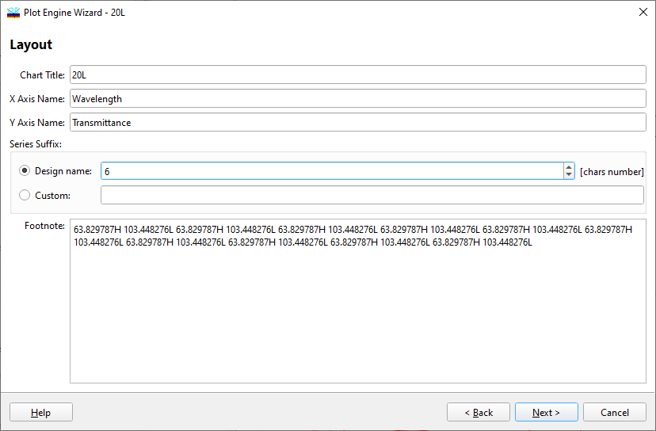

Plot Engine Layout
Plot Engine Layout
Navigation: OptiLayer Menu Commands > Analysis Menu > Plot Engine >
Plot Engine Layout
` <idh_plot_engine_1.html>`__ ` <idh_plot_engine.html>`__ ` <idh_plot_engine_3.html>`__
The second stage of setting up the OptiLayer Plot Engine is to select additional data to be presented in the chart for better documentation.

This dialog allows the user to set the Chart Title and modify the names assigned to the X, Y (or Z) axes. You may want to change the Y-axis name when you add a plot to the existing window (see the next stage of setting Plot Engine parameters). Additionally, the user can provide any comment to appear in the chart in the Footnote window. By default, the comment includes the current design formula. Series names in the Legend can be appended with optional text, entered in the Series Suffix entry field. Alternatively, the Series Suffix can be populated with the specified number of first characters from the loaded Design or Stack. To proceed with setting parameters, press the Next button. To return to the previous setup page, press the Back button. See also: